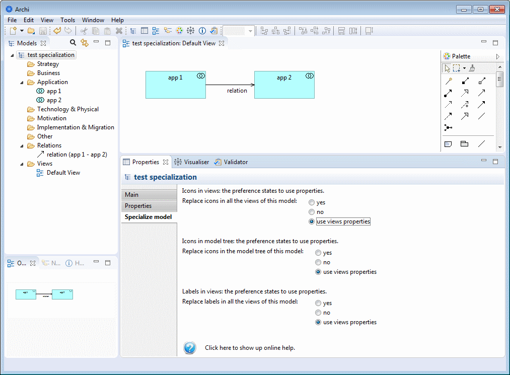
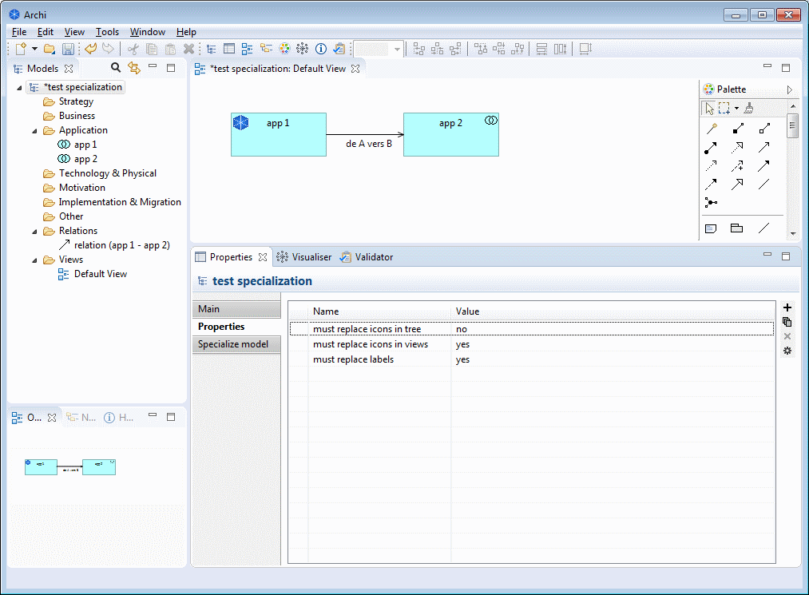

Specialization plugin
specialize model

When the model in selected in the model tree, a new "Specialize model" tab is shown in the properties window.
- Replace icons in all views of this model
- yes → sets the value of the "must replace icons in views" property to "yes"
- no → sets the value of the "must replace icons in views" property to "no"
- use views properties → removes the "must replace icons in views" property
- Replace icons in the model tree of this model
- yes → sets the value of the "must replace icons in tree" property to "yes"
- no → sets the value of the "must replace icons in tree" property to "no"
- use views properties → removes the "must replace icons in tree" property
- Replace labels in all views of this model
- yes → sets the value of the "must replace labels in views" property to "yes"
- no → sets the value of the "must replace labels in views" property to "no"
- use views properties → removes the "must replace labels in views" property
It is also possible to set the properties by hand.
